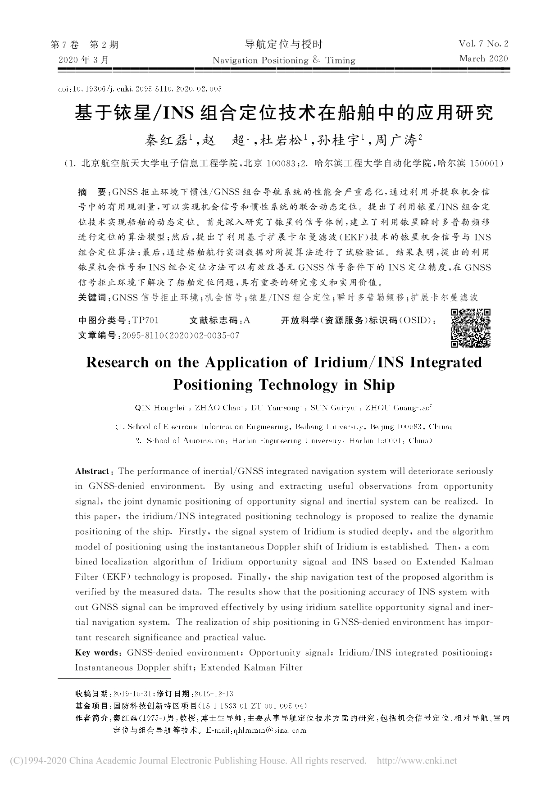
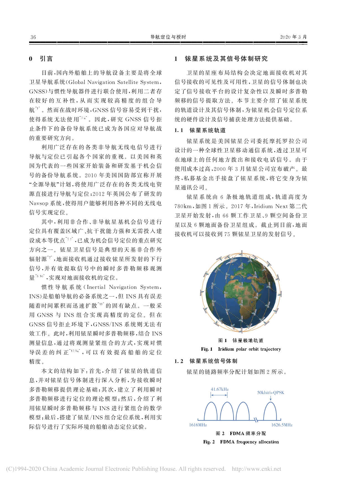
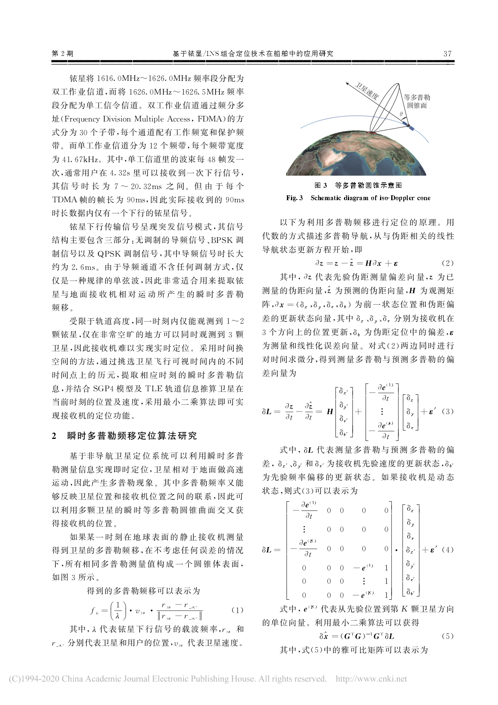
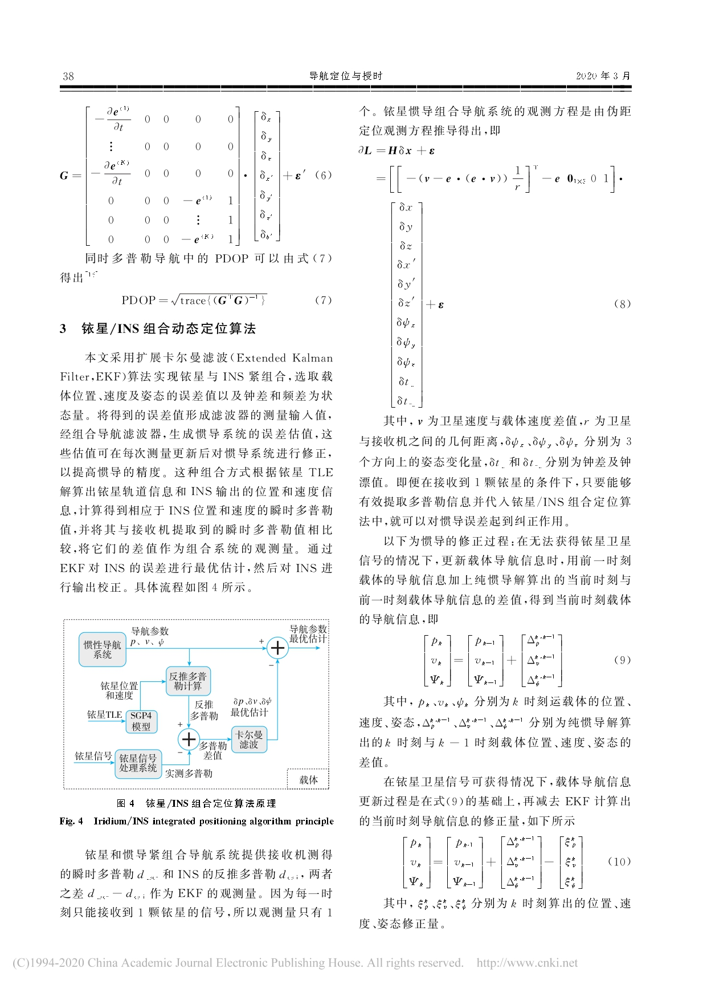
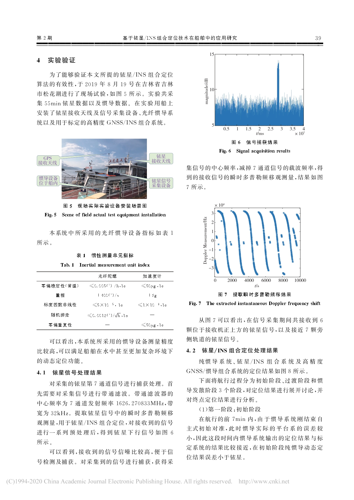
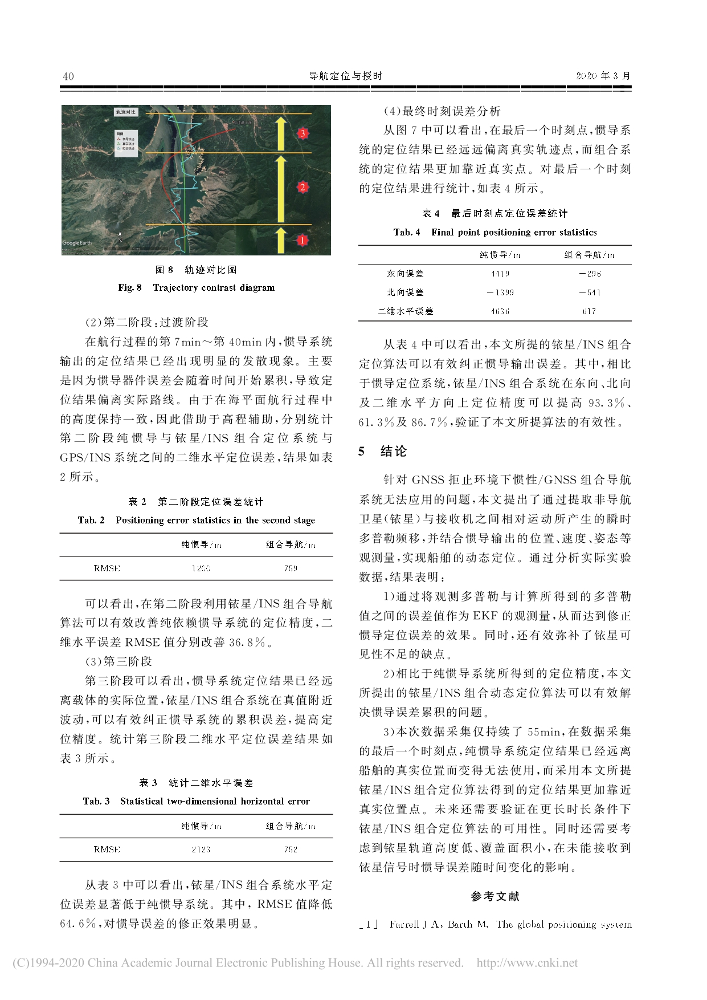
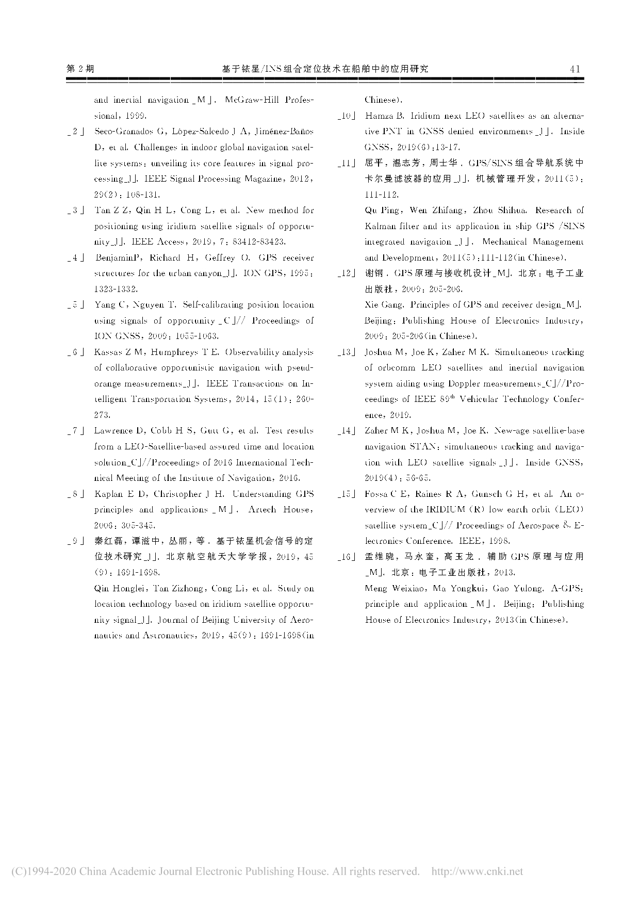

Academic Website
Publications
Projects
Interests & Plan
Homepage
SUN GUIYU
An EE Student in Beijing, China.
Links
My Detail CV.
Research on Time to First Fix of a Space-based Positioning Technology based on IRIDIUM Signals of Opportunity-Sun Guiyu







Publications
Projects
Interests & Plan
Homepage